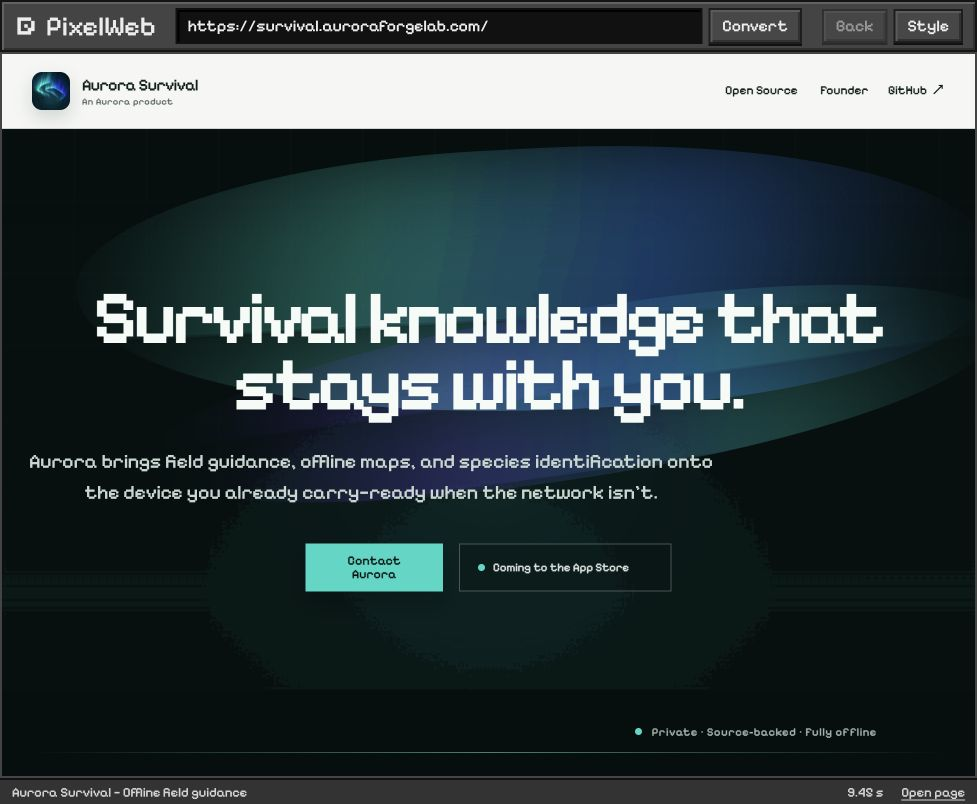

The web,
in pixels.
Keep the page. Change the pixels.
Full-page website conversion with readable images, English and Chinese pixel text, and supported source controls. This demo displays recorded screenshots.
Try your own website
Pixel view · Recorded from the local converter.
This is a recorded comparison. The switch changes screenshots. It does not submit URLs or run a conversion server. Visit the source website.
Make your own
pixel page.
Run the converter on your machine. Paste a public URL, choose Convert, then explore the full page.
git clone https://github.com/kenny2077/Pixel-Web.git
cd Pixel-Web
npm ciNode.js 22+, Python and a browser are required. Follow the complete setup guide.